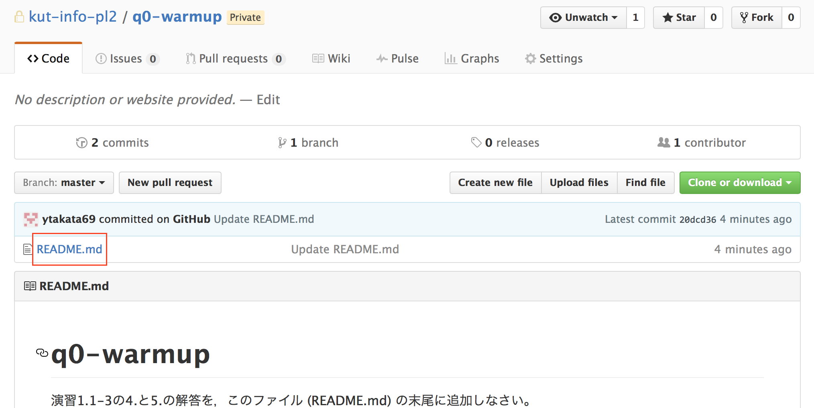
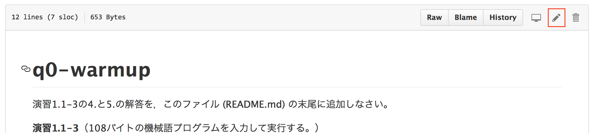
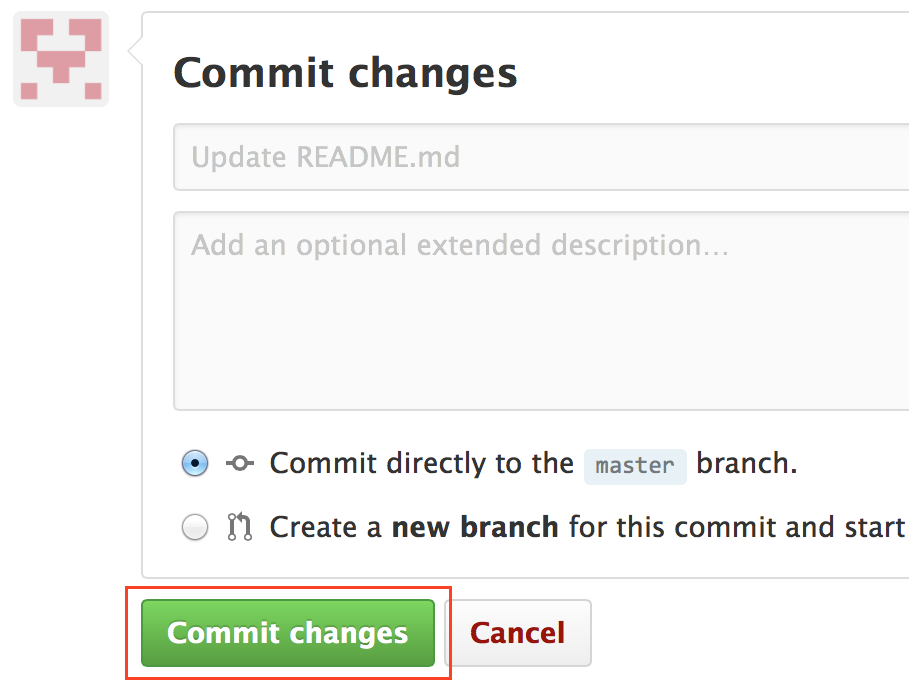

GitHubアカウントの取得
この授業では，作成するソースコードの保管や課題プログラムの提出に，バージョン管理システム Git とリポジトリホスティングサービス GitHub を利用する。 次回授業までに，各自，GitHubにサインアップしてGitHubアカウントを取得しなさい （すでにGitHubアカウントを持っている場合はそれを使って構わない。もしアカウントをクラスメイトや教員・TAに知られたくない場合は，この授業用に新規アカウントを作成しなさい）。
- 補足：学生用アカウント (free student account) である必要はない。この授業で使うリポジトリはこの授業の団体アカウント (@kut-info-pl2) 内に作るので，各自がリポジトリを作る必要はない。
やること
- GitHubアカウントを作成する（手順は下記を参照）
（すでに持っているアカウントをこの授業でも使う場合，このステップは不要。） - KUTLMS の「GitHubアカウント名の記入」に，この授業で使うGitHubアカウント名を入力する。
（ここで記入したGitHubアカウントでの活動が，成績に反映される。） 次のURLを開き，「Accept this assignment」（この課題を受ける）を選択する。
https://classroom.github.com/assignment-invitations/225a814714f1be4573bbb2be03b3a1f3- 「GitHub Classroom が Personal user data にアクセスすることを許可してください」という旨のページが表示されたら，内容を確認し，「Authorize application」ボタンを選択する。
- 「Accept the q0-warmup assignment」というページで「Accept this assignment」ボタンを選択する。
- 「Your assignment has been created here:」の右のリンク (https://github.com/kut-info-pl2/...) を選択する。この課題のための自分専用のリポジトリが作成される（少し時間が掛かる）。
作成されたリポジトリ (kut-info-pl2/q0-warmup-ユーザ名) に対し，下記の演習1.1-8を行う。
GitHubへのサインアップ
以下のWebページを参考に，新規アカウントを作成しなさい（料金プランは free （無料）を選択すること）。
- GitHubアカウント作成とリポジトリの作成手順 — Qiita
（「1.GitHubアカウントの作成」だけでよい。） - （上のページが見られない場合の予備） GitHub - アカウントの準備と設定
- （上のページが見られない場合の予備） Signing up for a new GitHub account
用語:
- サインアップ (sign up) ＝ 新規に利用者登録（アカウント作成）すること
- サインイン (sign in) ＝ ログインと同義
ユーザ名は好きに決めてよい。メールアドレスは，クラスメイトや教員・TAに知られてもよいものを使うこと（なるべく @ugs.kochi-tech.ac.jp を使うことをお奨めする）。
KUTLMSの「GitHubアカウント名の記入」にGitHubユーザ名を記入すること。記入しない場合，GitHub上の活動が成績に反映されない。
GitHubを使う（演習）
演習1.1-8 課題 q0-warmup をacceptして作られたリポジトリ (kut-info-pl2/q0-warmup-ユーザ名) の README.md に，演習1.1-3の4.と5.の解答を追記しなさい。
手順:
上下中央付近のファイル名「README.md」（下図の赤枠）を選択。
右端付近の鉛筆アイコン（下図の赤枠）を選択。
README.mdの中身を編集する（次項の「Commit」を実行するまでは編集結果が保存されないので注意）。
ページ下部の「Commit changes」ボタン（下図の赤枠）を選択。
（書いた内容を修正したければ，上記手順を繰り返す。）
バージョン管理システムにおいて，変更内容を記録することを「コミット」(commit) と言う。
補足：GitとGitHub
Gitはバージョン管理システムの一つ，GitHubはリポジトリホスティングサービスの一つだ。
バージョン管理システムについては後の章で詳しく説明するが，とりあえず，「『誰が，いつ，どういう変更を行ったか』という記録を残すファイル保管システム」と考えればよい。 また，変更履歴を遡ってファイルのバージョンを過去の時点に戻せる「バックアップシステム」とも言える。 複数人で行うソフトウェア開発では，何らかのバージョン管理システムを使ってファイルを管理するのが普通だし，一人で開発する場合でも，「変更履歴を残す」「必要が生じたら過去のバージョンに戻す」ために，バージョン管理システムがしばしば使われる。
バージョン管理システムにおいて，管理対象ファイルの中身や変更履歴を保管するデータベースのことをリポジトリ (repository) と言う。リポジトリホスティングサービスは，リポジトリの置き場を提供してくれるサービスだ。
- 補足：DropboxやGoogle Drive等のストレージサービスとどこが違う?
- 同じところ = 利用者のファイルを保管する（ための記憶容量を貸す）。
- 相違点 = ファイルの出し入れにバージョン管理システムを使う。バージョン管理システムが扱う履歴情報を保管する。
GitとGitHubについては，Pro Git bookの1.1節の冒頭（「ローカル・バージョン管理システム」の手前まで）と1.2節と4.9節を読めばある程度概要が掴めると思う。 Gitに限らず，バージョン管理システムを共同作業に使う場合，各メンバーが好きな時間にリポジトリにアクセスできるようリポジトリサーバを設置する必要がある（詳しくはPro Git bookの4章を参照）が，自前のサーバを設置する代わりにリポジトリホスティングサービスを利用することもできる。GitHubはGitホスティングサービスの一つだが，その中でも最大で「事実上の標準」の地位にある。